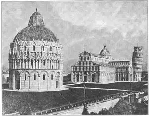

71
ROUND ARCHES
圆拱

SUPPOSE you thought the world was going to end next year! Most people in Europe in the Dark Ages thought the world was going to come to an end in 1000 A.D. They weren’t sure just how it would happen. Perhaps it was going to burn up, they thought, or fall apart or blow up with earthquakes and volcanoes. But they felt sure from what they read in the Bible that 1000 A.D. was going to see the end of the world. Important buildings were not built, because what was the use? They’d all be destroyed with the end of the world.
Then 1000 A.D. came and nothing happened to the world. Still the world was there, and so people found they must have been mistaken. More good buildings began to be built. The light in the darkness of the Dark Ages began to get brighter.
And now I’ll have to tell you of the new kind of architecture that was used after 1000 A.D. This new kind of architecture is called Romanesque. The easiest way for you to tell that a building is Romanesque is to look at the tops of the windows and doors. If all the windows and doors have round arches for tops, then the building is probably Romanesque.
People call it Romanesque because it was used in the countries that once belonged to Rome. Just as each of these former Roman countries came to have its own language, descended from Latin, so each country came to have its own Romanesque architecture, descended from Roman architecture.
The Romanesque architecture of Italy is most like the old basilican kind and so I’ll tell you first about the most famous Italian Romanesque buildings.
I’m sure you know the tower in this picture. It is the famous Leaning Tower of Pisa. The building next to the tower is the cathedral.
Every church isn’t a cathedral. A cathedral is a church with a bishop. The chair that the bishop used in his church was called a cathedra. As the bishop’s church always had a cathedra, the bishop’s church was called a cathedral. This was the cathedral of the Bishop of Pisa.
If you were to look down on a cathedral from an airplane you would see it was built in the shape of a cross. But this cross isn’t a Greek cross, because all the arms are not the same length. A cross with the main stem longer than the other parts is called a Latin cross. Most Romanesque churches were built in the form of a Latin cross. The top of the cross was always pointed toward the east so that the altar in that end of the church could be nearer Palestine in the East, where Christ was born.

No.71-1 BAPTISTERY, CATHEDRAL AND LEANING TOWER, PISA
（比萨洗礼堂、比萨大教堂和比萨斜塔）
The outside of the cathedral at Pisa is worth looking at, especially if you make believe you are a detective and can see things that most people don’t notice. The rows of columns with arches over them are called arches. A detective would notice at once that all the arches are round arches, and so he could guess the building is probably Romanesque. There are four of these rows of arches or arcades on the west end of this cathedral.
And here is something I don’t believe you’d notice unless you were a very good detective. Each arcade is a different height. The third arcade from the ground has the tallest columns. The arcade next to the bottom is not quite as tall, the top one is still shorter, and the bottom arcade has the shortest columns of all. A very, very good detective would notice that the middle arch in the two arcades nearest the ground is bigger than the other arches.
Now look even more closely. A very extra good detective would see that the columns in the two top arcades are not always exactly over the columns below them.
All these differences were not just accidental. The arcades were built that way on purpose. If all four arcades had been just alike they would have made the whole front of the cathedral look tiresome, monotonous, uninteresting.
Now if you will look at the Leaning Tower, you can see that all the arcades are just alike. For that reason, the tower isn’t so beautiful as the cathedral. Many people even call the tower ugly. I don’t think it is ugly, but I certainly can’t say it’s as pleasing to look at as the cathedral, though you may find it more interesting on account of the way it leans. The Leaning Tower was built later than the cathedral. Maybe by then the architects had forgotten why the cathedral arcades were not built all alike.
The tower started leaning almost as soon as it was begun. Before the first story was finished, the foundations on one side were much lower than on the other, so work on the building was stopped. But, after several years, another architect managed to get three more stories built before he had to stop on account of the slant. Still later another architect finished the tower. But some people have said the tower was meant to lean in the first place so it would be different from other towers.
It is true that each city in Italy was trying to get ahead of every other city with buildings that would attract attention. But most people now believe the foundations sank in soft ground on one side and that the lean of the tower was an accident. The top of it leans about fourteen feet out over the bottom. There are seven bells in the top and the heaviest bell is kept on the side away from the lean to help balance the tower.
Near the cathedral stands a circular building called the Baptistery of Pisa. The Baptistery was built to baptize the people in. It was changed a great deal in looks after the Romanesque period was over, because later architects thought they could make it look better than it looked at first.
A good example of a Romanesque building in France is the Cathedral of Angoulême. The front, as you can see in the picture, is decorated with sculpture. Notice the round arches that belong to all Romanesque buildings.
In England, the Normans who came over with William the Conqueror built many stone churches, cathedrals, and castles. Norman buildings are Romanesque just as much as the French and Italian, but they are usually called Norman buildings instead of Romanesque. Very little of the Norman Romanesque looks now as it did when the Normans built it, because later builders kept adding to it and changing it. Often some parts of an English church are Norman, while later parts of the same church are not Norman style at all.
Germany also has some fine Romanesque cathedrals and churches. And they all have arcades and round arches over the windows and doors. And that’s really the big thing to remember about Romanesque buildings—round arches and arcades.
【中文阅读】
假设你也曾有过这样的想法：来年就是世界末日！欧洲黑暗时代的大多数人都认为世界将在公元1000年结束。他们只是不太确定那将怎样发生。他们想，也许它会被火烧成平地，或是被地震或火山搅得四崩五裂。但他们坚信圣经的记载，公元1000年时将目睹世界的灭亡。所以当时并没有建造什么重要的建筑物。因为建了又有什么用呢？到了世界末日那天，还不都照样要被毁掉。
公元1000年终于来到了，世界却安然无恙。世界仍在那里。人们也发现，一定是他们自己弄错了。人们又开始大兴土木，好看的建筑物纷纷开始出现。黑暗时期的 曙光越来越明亮了。
我现在要介绍的是公元1000年后出现的新型建筑。这种建筑风格叫做“罗马式建筑”。有一种最简单的方法能说明什么是罗马式建筑，那就是看看门和窗的顶部是不是圆拱形式。如果是，那么该建筑物就可能是罗马式建筑。
人们之所以称它罗马式建筑是因为那些曾隶属罗马帝国的国家采用过这种样式。像所有属于前罗马帝国的国家都渐渐有了自己的从拉丁语演变过来的语言一样，每个国家也开始有了从罗马建筑演变过来的具有自己特色的罗马式建筑。
意大利的罗马式建筑很像古老的长方形教堂，所以，让我们先来谈谈意大利最著名的罗马式建筑。
我想你肯定认识这幅图上的塔吧。这是著名的比萨斜塔。塔旁边的那座建筑物就是比萨大教堂。
并不是所有的教堂都是大教堂。有主教的教堂才叫做“大教堂”。主教在教堂里的专门座椅叫做“主教座”。由于主教的教堂都有主教座，所以主教的教堂被称作大教堂。图为比萨主教的大教堂。
如果从飞机上俯瞰一座大教堂，你将看到它的形状像个十字架。但这种十字形不属于希腊式，因为它的四端长度不相等。上下两端比左右两端长的叫做拉丁十字形。大多数罗马式教堂都建成拉丁十字形。十字形教堂的顶端总是指向东方，所以教堂顶头的祭坛就离东方的巴勒斯坦更近一点，那是基督诞生的地方。
“比萨大教堂”的外观很值得一看，特别在你自认为是个侦探，且能发现别人注意不到的事情的时候。拱门上面有一排排柱子的叫做“拱廊”。侦探立刻就能发现所有的拱门都是圆形的，所以他可以猜出这种建筑十有八九是罗马式建筑。在这座大教堂的西边有四排这样的拱门或拱廊。
还有一些东西我想你可能注意不到，除非你是个非常优秀的侦探。拱廊各有不同的高度。第三拱廊平地而起，拱门柱最高。靠近教堂底部的拱廊相对不高，最高拱廊的柱身仍然比别的要矮，而教堂底部拱廊的柱身则是最矮的。眼力特好的侦探将会注意到两个最靠近地面的拱廊中的拱门比其他拱门都要大。
好，让我们再仔细地看看吧。优秀得不能再优秀的侦探将会看到，最上层两个拱廊的柱子并不肯定比下面拱廊的柱子高。
所有这些不同点并不都是偶然的。这些拱廊都是故意这样安排的。如果四个拱廊都一样高的话，它们就会使大教堂的正面看起来呆板、单调、乏味。
如果再看一下“比萨斜塔”，你将发现所有的拱廊看起来都差不多。正因为如此，斜塔才没有大教堂好看。甚至很多人都说斜塔丑陋。我倒不认为它有多难看，但我也不可能自欺欺人地说它和大教堂一样好看，尽管也许找出比萨斜塔倾斜的原因可能会更有意思。比萨斜塔的建造时间要晚于比萨大教堂。也许那时的建筑师们早就忘了为什么比萨大教堂的拱廊建得不一样。
比萨斜塔几乎在它刚建成后就开始倾斜了。在第一层建好之前，塔的根基就比另一边的要低很多，所以只得停工。但是，几年之后，另外一位建筑师却设法加了三 层，后因倾斜度问题不能再往上加了。再后来，又有一位建筑师完成了塔的整个工程。但也有人说，在建第一层时就故意倾斜，以使这塔看起来与众不同。
确实如此，意大利的每一座城市都力图通过建造特别引人注目的建筑物来比其他城市更引人关注。但大多数人认为斜塔的根基在一边的软土里下沉导致塔的倾斜完全是一个事故。塔的顶端要比底部斜出14英尺。塔的顶部挂了七座大钟，最重的那座挂在倾斜的另一侧，以使斜塔保持平衡。
比萨大教堂的旁边屹立着一座半圆形建筑物，叫做“比萨洗礼堂”。比萨洗礼堂是给人施洗用的。罗马统治结束后它的外观改变了很多，因为后来的建筑师们认为他们能把它改造得更好看一点。
法国的罗马式建筑的一个典范是“昂古莱姆大教堂”。如图所示，教堂的正面是塑像装饰。留意一下属于罗马式建筑的圆拱。
诺曼人跟随征服者威廉进入英国后用石头为材料在英国建造了许多教堂、大教堂以及城堡。诺曼人的建筑与法国人和意大利人的建筑一样同属罗马式建筑，但通常称为诺曼式建筑，而不称作罗马式建筑。只有极少一部分诺曼人的罗马式建筑与它们当初刚建成时看起来一样，这是因为后来的建筑者不断地在原样上进行修补和改造。一座英国的教堂常常只有其中某些部分呈诺曼风格，而其他部分连诺曼风格的影子也见不到了。
德国也有一些非常考究的罗马式大教堂和教堂。它们在窗户和门上都建有拱廊和圆拱。这确实是罗马式建筑值得我们回味的要点——圆拱和拱廊。